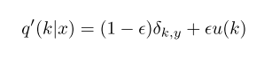
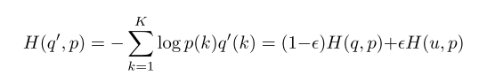
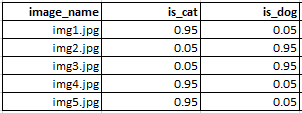
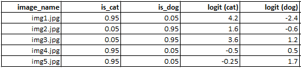
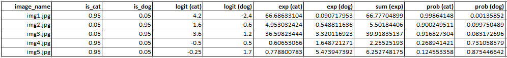

Label Smoothing Explained using Microsoft Excel
Better language models and their implications
In this blogpost, we re-implement Label Smoothing in Microsoft Excel step by step.
1 Introduction
In this blogpost, together, we: - Read and understand about Label Smoothing from Rethinking the Inception Architecture for Computer Vision research paper - Look at why we need Label Smoothing? - Re-implement Label Smoothing in Microsoft Excel step by step - Compare the results from our MS Excel implementation with Fastai/PyTorch versions of Label Smoothing
Why are we using Microsoft Excel?
It’s a valid question you might ask and I wasn’t a big fan of MS Excel either until I saw this video by Jeremy Howard about Cross Entropy Loss. In the video Jeremy explains Cross Entropy Loss using Microsoft Excel. It clicked and I understood it very well even with the fancy math in the cross entropy loss formula.

And that is my hope here too! In this blogpost I hope that together we can see past the math and get the intuition for Label Smoothing and then later be able to implement it in a language/framework of our choice.
So, let’s get started!
2 Why do we need Label Smoothing?
Let’s consider we are faced with a multi-class image classification problem. Someone presents to us five images with labels -
| Image Name | Label |
|---|---|
| img-1.jpg | Dog |
| img-2.jpg | Cat |
| img-3.jpg | Horse |
| img-4.jpg | Bear |
| img-5.jpg | Kangaroo |
As humans, we will quickly be able to assign labels to the image just by looking at them, for example we know that img-1.jpg is that of a dog, img-2.jpg is a cat and so on.
Let’s one-hot encode the labels, so our labels get updated to:
| Image Name | is_dog | is_cat | is_horse | is_bear | is_kroo |
|---|---|---|---|---|---|
| img-1.jpg | 1 | 0 | 0 | 0 | 0 |
| img-2.jpg | 0 | 1 | 0 | 0 | 0 |
| img-3.jpg | 0 | 0 | 1 | 0 | 0 |
| img-4.jpg | 0 | 0 | 0 | 1 | 0 |
| img-5.jpg | 0 | 0 | 0 | 0 | 1 |
Let’s imagine that we used the above set of 5 images and the labels and trained a deep learning model which in it’s early stages learns to predict a set of logits for each class like so:
| Image Name | is_dog | is_cat | is_horse | is_bear | is_kroo |
|---|---|---|---|---|---|
| img-1.jpg | 4.7 | -2.5 | 0.6 | 1.2 | 0.4 |
| img-2.jpg | -1.2 | 2.4 | 2.6 | -0.6 | 2.34 |
| img-3.jpg | -2.4 | 1.2 | 1.1 | 0.8 | 1.2 |
| img-4.jpg | 1.2 | 0.2 | 0.8 | 1.9 | -0.6 |
| img-5.jpg | -0.9 | -0.1 | -0.2 | -0.5 | 1.6 |
This is pretty standard - right? This is what we do when we’re training an image classifier anyway. We pass a list of images and labels, make the model predict something, then calculate the cross-entropy loss and backpropogate to update the model’s parameters. And we keep doing this until the model learns to assign the correct labels to the corresponding images. So what’s the problem?
Here’s the important part:
For the cross-Entropy loss to really be at a minimum, each logit corresponding to the correct class needs to be significantly higher than the rest. That is, for example for row-1, img-1.jpg the logit of 4.7 corresponding to is_dog needs to be significantly higher than the rest. This is also the case for all the other rows.
A mathematical proof is presented here by Lei Mao where he explains why minimizing cross entropy loss is equivalent to do maximum likelihood estimation.
This case where, in order to minimise the cross-entropy loss, the logits corresponding to the true label need to be significantly higher than the rest can actually cause two problems.
From the paper, > This, however, can cause two problems. First, it may result in over-fitting: if the model learns to assign full probability to the ground- truth label for each training example, it is not guaranteed to generalize. Second, it encourages the differences between the largest logit and all others to become large, and this, combined with the bounded gradient ∂ℓ/∂z,k , reduces the ability of the model to adapt.
In other words, our model could become overconfident of it’s predictions because to really minimise the loss, our model needs to be very sure of everything that it predicts. This is bad because it is then harder for the model to generalise and easier for it to overfit to the training data. We want the model to generalize and be able to look at other dogs, cats.. images that weren’t part of the training set and still be able to predict them well.
3 What is Label Smoothing?
Label Smoothing was first introduced in Rethinking the Inception Architecture for Computer Vision.
From Section-7 - Model Regularization via Label Smoothing in the paper, > We propose a mechanism for encouraging the model to be less confident. While this may not be desired if the goal is to maximize the log-likelihood of training labels, it does regularize the model and makes it more adaptable. The method is very simple. Consider a distribution over labels u(k), independent of the training example x, and a smoothing parameter Є. For a training example with ground-truth label y, we replace the label distribution q(k/x) = δ(k,y) with

which is a mixture of the original ground-truth distribution q(k|x) and the fixed distribution u(k), with weights 1 − Є. and Є, respectively. In our experiments, we used the uniform distribution u(k) = 1/K, so that

In other words, instead of using the hard labels or the one-hot encoded variables where the true label is 1, let’s replace them with (1-Є) * 1 where Є refers to the smoothing parameter. Once that’s done, we add some uniform noise 1/K to the labels where K: total number of labels.
So the updated distribution for the our examples with label smoothing factor Є = 0.1 becomes:
| Image Name | is_dog | is_cat | is_horse | is_bear | is_kroo |
|---|---|---|---|---|---|
| img-1.jpg | 0.92 | 0.02 | 0.02 | 0.02 | 0.02 |
| img-2.jpg | 0.02 | 0.92 | 0.02 | 0.02 | 0.02 |
| img-3.jpg | 0.02 | 0.02 | 0.92 | 0.02 | 0.02 |
| img-4.jpg | 0.02 | 0.02 | 0.02 | 0.92 | 0.02 |
| img-5.jpg | 0.02 | 0.02 | 0.02 | 0.02 | 0.92 |
We get the updated distribution above because 1-Є = 0.9. So as a first step, we replace all the true labels with 0.9 instead of 1. Next, we add a uniform noise 1/K = 0.02 because in our case K equals 5. Finally we get the above update distribution with uniform noise.
The authors refer to the above change as label-smoothing regularization or LSR. And then we calculate the cross-entropy loss with the updated distribution LSR above.
Now we train the model with the updated LSR instead and therefore, cross-entropy loss get’s updated to:

Basically, the new loss H(q′, p) equals 1-Є times the old loss H(q, p) + Є times the cross entropy loss of the noisy labels H(u, p). This is key in understanding Label Smoothing - it is essentially the cross entropy loss with the noisy labels.
Let’s now cut the math and implement this in Microsoft Excel step by step.
4 Label Smoothing in Microsoft Excel
In this section we implement label smoothing in Microsoft Excel. We know that cross-entropy loss equals:
Great, and from section-2, we also know that Label Smoothing loss is actually the cross entropy loss with the noisy labels.
Let’s consider we have five images again, but this time of only cats and dogs.

At the moment, the labels are one-hot encoded. Let’s consider we are using a smoothing factor Є of 0.1. In this case, the updated labels become:

We get fig-2 by implementing eq-2 on fig-1. So, now we have our LSR labels. Next step is to simply calculate the cross-entropy loss. We will use the fastai implementation of cross-entropy loss in excel, and use it on our LSR labels to calculate the Label Smoothing Cross Entropy Loss.
Let’s consider that our model learns to predict the following logits for each class like so:

Also, to calculate the cross-entropy loss, we first need to convert the logits to probabilities. The logits are the outputs from the last linear layer of our deep learning model. To convert them to probabilities, we generally have a softmax layer in the end. Jeremy explains how to implement Cross-Entropy loss in Microsoft Excel here including Softmax implementation.
This is the where you PAUSE, look at the video and understand how Jeremy implements Softmax and Cross-Entropy loss in Microsoft Excel. If you already know how, great, let’s move on.
We repeat the same process of applying Softmax operation to the logits to then get our probabilities like so:

What we have essentially done, is that we take the exponential of the logits, to get exp (cat) and exp (dog) from logit (cat) and logit (dog). Next, we take get the sum (exp) by adding exp (cat) and exp (dog) along the rows. Finally, we get prob (cat) by dividing exp (cat) with sum (exp) and we get prob (dog) by sum (exp). This is how we implement Softmax operation in Microsoft Excel.
So, now that we have successfully converted logits to Probabilities for each image. The next step is simply to calculate the Cross-Entropy loss which from eq-4, is ∑q(x)log(p(x)) where p(x) refers to the predicted probability and q(x) refers to the ground truth label. In our case q(x) are the noisy labels, so, we get the LabelSmoothingCrossEntropy loss like so:

Believe it or not, we have just successfully implemented Label Smoothing Cross Entropy loss in Microsoft Excel.
5 Fastai/PyTorch Implementation of Label Smoothing Cross Entropy loss
The Label Smoothing Cross Entropy loss has been implemented in the wonderful fastai library like so:
# Helper functions from fastai
def reduce_loss(loss, reduction='mean'):
return loss.mean() if reduction=='mean' else loss.sum() if reduction=='sum' else loss# Implementation from fastai https://github.com/fastai/fastai2/blob/master/fastai2/layers.py#L338
class LabelSmoothingCrossEntropy(nn.Module):
def __init__(self, ε:float=0.1, reduction='mean'):
super().__init__()
self.ε,self.reduction = ε,reduction
def forward(self, output, target):
# number of classes
c = output.size()[-1]
log_preds = F.log_softmax(output, dim=-1)
loss = reduce_loss(-log_preds.sum(dim=-1), self.reduction)
nll = F.nll_loss(log_preds, target, reduction=self.reduction)
# (1-ε)* H(q,p) + ε*H(u,p)
return (1-self.ε)*nll + self.ε*(loss/c) In PyTorch, nn.CrossEntropyLoss() is the same as F.nll_loss(F.log_softmax(...)). Therefore, in the implementation above, nll equates to H(q,p) from eq-3. And then, the loss/c equates to H(u,p) from eq-3 as well where, c equals total number of classes.
For reference again, we know that eq-3 was:
So, the above implementation can directly be compared to eq-3 and the Label Smoothing Cross Entropy loss then becomes (1-self.ε)*nll + self.ε*(loss/c).
6 Comparing Microsoft Excel results with PyTorch
Great, now that we know how to implement Label Smoothing Cross Entropy loss in both Microsoft Excel and PyTorch, let’s compare the results. We take the same example as fig-3, and assume that our model in PyTorch predicts the same logits.
# X: model logits or outputs, y: true labels
X = torch.tensor([
[4.2, -2.4],
[1.6, -0.6],
[3.6, 1.2],
[-0.5, 0.5],
[-0.25, 1.7]
])
y = torch.tensor([0,1,1,0,0])
print(X, '\n\n', y)
>> #out
tensor([[ 4.2000, -2.4000],
[ 1.6000, -0.6000],
[ 3.6000, 1.2000],
[-0.5000, 0.5000],
[-0.2500, 1.7000]])
tensor([0, 1, 1, 0, 0])This is the same as Microsoft Excel and label 0 corresponds to is_cat and label 1 corresponds to is_dog. Let’s now calculate the Label Smoothing Cross Entropy loss.
LabelSmoothingCrossEntropy(ε=0.1, reduction='none')(X,y)
>> #out
tensor([0.3314, 2.1951, 2.3668, 1.2633, 1.9855])The results match our Microsoft Excel LS X-entropy results from fig-5.
7 Conclusion
I hope that through this blog post, I have been able to help you get a thorough understanding of Label Smoothing. By implementing Label Smoothing Cross Entropy loss in Microsoft Excel, step by step, I also hope that I’ve been clear in my attempt to explain everything that goes on behind the scenes. Please feel free to reach out to me via Twitter at @amaarora - constructive feedback is always welcome.
8 References
- A Simple Guide to the Versions of the Inception Network by Bharat Raj
- When does label smoothing help by Hinton et al
- On Calibration of Modern Neural Networks aka Temperature Scaling by Pleiss et al
- Mathematical explainations and proofs for label smoothing by Lei Mao
- Label Smoothing + Mixup by Jeremy Howard
- Cross Entropy Loss in Microsoft Excel by Jeremy Howard
9 Credits
This blogpost wouldn’t have been possible without the help of my very talented friend Atmadeep Banerjee. Atmadeep, is currently interning and researching about Instance Segmentation at Harvard! You can find some of his very cool projects at his GitHub here.
Atmadeep was very kind to jump on a call with me for over an hour, when I was unable to replicate the results in Excel and help me find my mistake - LOG function in excel has base 10 whereas in numpy and pytorch it’s LOG to the base e! In MS Excel, LOG to the base e is referred to as LN.
It was really funny to have spent the day reading numerous blog posts, few research papers and source code for PyTorch and then finding out that MS Excel implements LOG function differently than numpy and pytorch. But hey, lesson learnt, when in doubt, contact @Atmadeep Banerjee - he has an eye for detail.